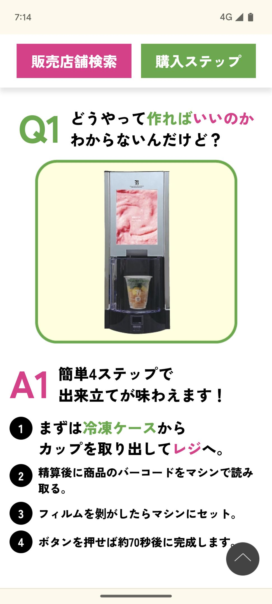

<- 日記
日記書き忘れた。
セブンイレブンのベリーベリーヨーグルトスムージー飲んだ。味はうまい。330円という恐ろしい価格だが102kcalしかなく、コストあたりのカロリーは極めて悪いと言える。隕石が地球に衝突して食べ物に困るような状況で最も買ってはいけないもののひとつ。
コンビニの店頭にあるコーヒーとかのマシンってでも、あんまり触りたくないんだよな。久しぶりに触って思い出した。なんか汚い気がしてしまう。

作り方も丁寧に書いてあった。親切。なくてもわかるけどな。